Breakthroughs in Topology#
“Geometry is the art of reasoning well from badly drawn figures.” – attributed to Henri Poincaré
Topology studies the properties of a shape that survive stretching and
bending: how many pieces it has, how many holes, whether it has two
sides. Euler’s polyhedron formula, the subject’s first theorem, is told
in Breakthroughs in Computational Geometry. This chronology starts where counting
vertices, edges and faces turned into algebra. It runs from Gauss’s
linking integral and the one-sided surfaces of Möbius and Listing,
through Poincaré’s homology and fundamental group and the fixed-point
theorems of Brouwer and Lefschetz, to the persistent homology that
applies the same algebra to data. It traces the ideas behind
mathematicskit.topology.
1833 – Gauss’s Linking Number#
In a note dated 22 January 1833, Carl Friedrich Gauss wrote down a double integral over two closed curves, \(\frac{1}{4\pi}\oint\oint \frac{(r_1 - r_2)\cdot(dr_1 \times dr_2)}{|r_1 - r_2|^3}\), and observed that it counts the “intertwinings” of the curves. He met it in electromagnetism: by the Biot-Savart law it is the work done on a magnetic pole carried around one loop by a current flowing in the other. The value is always an integer, and it cannot change unless one curve is passed through the other. It was the first topological invariant computed by an integral, and the ancestor of the Gauss map and the degree of a map. The note appeared only in 1867, in the fifth volume of his collected works.
Implementation: mathematicskit.topology.systems.curves.linking_number()
evaluates Gauss’s integral exactly on polygons, as a sum of the solid
angles subtended by pairs of segments. The tests check the Hopf link
(\(\pm 1\)), separated rings (0), the sign flip under reversal, and a
torus link with linking number 2.
References: C. F. Gauss, “Zur mathematischen Theorie der electrodynamischen Wirkungen” (1833), in Werke V (Göttingen, 1867), 605; M. Epple, “Orbits of asteroids, a braid, and the first link invariant,” Mathematical Intelligencer 20(1) (1998), 45-52.
1858-1865 – Möbius, Listing, and the One-Sided Surface#
Johann Benedict Listing, a student of Gauss, coined the word “topology” in 1847. In 1858 he and August Ferdinand Möbius independently found the strip that is glued with a half twist. Listing published it in 1861, Möbius in 1865. Möbius was studying polyhedra, and noticed that some cannot be assigned a volume, because their faces cannot all be oriented consistently. A strip of triangles whose orientations, carried around the band, come back reversed is the simplest example. Orientability became one of the three invariants of the later classification of surfaces.
Implementation: mathematicskit.topology.systems.surfaces.is_orientable()
propagates orientations across shared edges by breadth-first search
and reports a contradiction, and
boundary_components()
counts boundary circles. mobius_strip()
triangulates the strip. The tests check that a closed surface is
orientable exactly when its top homology is \(\mathbb{Z}\).
References: J. B. Listing, “Der Census räumlicher Complexe,” Abhandlungen der Königlichen Gesellschaft der Wissenschaften zu Göttingen 10 (1861), 97-182; A. F. Möbius, “Über die Bestimmung des Inhaltes eines Polyëders,” Berichte über die Verhandlungen der Königlich Sächsischen Gesellschaft der Wissenschaften 17 (1865), 31-68.
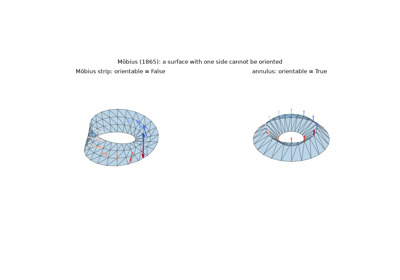
Möbius and Listing: the one-sided surface (1858-1865)
1861 – Smith’s Normal Form#
Henry John Stephen Smith, Savilian Professor of Geometry at Oxford, showed in 1861 that any integer matrix can be brought to diagonal form \(D = UAV\) by invertible integer row and column operations, with each diagonal entry dividing the next. The diagonal entries, the invariant factors, are uniquely determined. They classify the abelian group \(\mathbb{Z}^m / A\mathbb{Z}^n\) and solve systems of linear Diophantine equations. Smith wrote for number theory, but forty years later the same reduction applied to the incidence matrices of a complex gave Poincaré its torsion coefficients. It is still how integer homology is computed.
Implementation: mathematicskit.topology.systems.homology.smith_normal_form()
works in exact integer arithmetic (numpy and scipy have no Smith form)
and returns D, U and V in a SmithNormalFormResult. The
tests check \(UAV = D\), unimodularity, the divisibility chain, and
that the product of the factors is \(|\det A|\).
References: H. J. S. Smith, “On systems of linear indeterminate equations and congruences,” Philosophical Transactions of the Royal Society of London 151 (1861), 293-326.
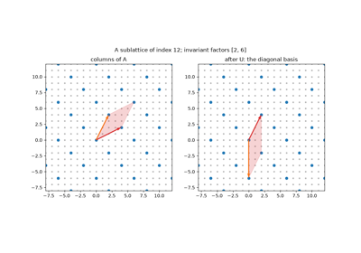
Smith’s normal form of an integer matrix (1861)
1871 – Betti’s Connectivity Numbers#
Riemann had measured the connectivity of a surface by the number of cuts needed to make it simply connected. Enrico Betti, who had discussed these ideas with Riemann in Pisa, extended them in 1871 to spaces of any dimension. For each dimension \(k\) he counted the independent closed \(k\)-dimensional “surfaces” that do not bound a region. In the later algebra of chains these Betti numbers are \(\beta_k = \dim\ker\partial_k - \operatorname{rk}\partial_{k+1}\), the number of cycles that are not boundaries. \(\beta_0\) counts components, \(\beta_1\) independent loops and \(\beta_2\) enclosed cavities.
Implementation: mathematicskit.topology.systems.homology.betti_numbers()
computes them from the ranks of the boundary matrices of a
SimplicialComplex, over the
rationals with numpy.linalg.matrix_rank() or over
\(\mathbb{Z}/p\) by elimination. The tests check spheres
\((1, 0, \dots, 0, 1)\), the torus \((1, 2, 1)\) and invariance
under subdivision.
References: E. Betti, “Sopra gli spazi di un numero qualunque di dimensioni,” Annali di Matematica Pura ed Applicata (2) 4 (1871), 140-158.
1882 – Klein’s Bottle#
Felix Klein described in 1882 a closed surface obtained from a cylinder by gluing its two ends with a reflection, the companion of the torus for one-sided surfaces. It has no boundary and no inside, and it cannot be placed in three-dimensional space without crossing itself. A popular story has its English name come from a pun on Fläche (surface) and Flasche (bottle). Its first homology group, \(\mathbb{Z} \oplus \mathbb{Z}/2\), became the standard example of torsion. One loop does not bound, but twice it does. Rational Betti numbers miss the torsion and give \((1, 1, 0)\), while mod-2 coefficients see it and give \((1, 2, 1)\).
Implementation: mathematicskit.topology.systems.complexes.klein_bottle()
triangulates it, with the figure-8 immersion as coordinates, and
homology() finds the
\(\mathbb{Z}/2\). The tests compare Betti numbers over
\(\mathbb{Q}\), \(\mathbb{Z}/2\) and \(\mathbb{Z}/3\).
References: F. Klein, Über Riemanns Theorie der algebraischen Functionen und ihrer Integrale (Leipzig: Teubner, 1882), Sec. 23.
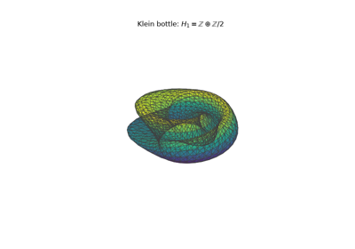
Klein’s bottle and torsion in homology (1882)
1885-1927 – Poincaré, Hopf, and the Index of a Vector Field#
Studying the solutions of differential equations in the plane, Henri Poincaré attached to each isolated zero of a vector field an index: the number of turns the field makes along a small loop around it. Sources, sinks and centres have index \(+1\) and saddles \(-1\). He proved in 1885 that on a closed surface the indices add up to the Euler characteristic, so every vector field on the sphere must vanish somewhere. Heinz Hopf extended the theorem to manifolds of every dimension in 1926, and the Poincaré-Hopf theorem became a model for theorems that tie local analysis to global topology.
Implementation: mathematicskit.topology.systems.fixed_points.vector_field_index()
follows the field’s angle around a circle. The tests check sources,
saddles, \(z^k\) and \(\bar z^2\), and that a field pointing out
of the unit disc has total index \(1 = \chi(\text{disc})\).
References: H. Poincaré, “Sur les courbes définies par les équations différentielles (3e partie),” Journal de Mathématiques Pures et Appliquées (4) 1 (1885), 167-244; H. Hopf, “Vektorfelder in n-dimensionalen Mannigfaltigkeiten,” Mathematische Annalen 96 (1927), 225-249.
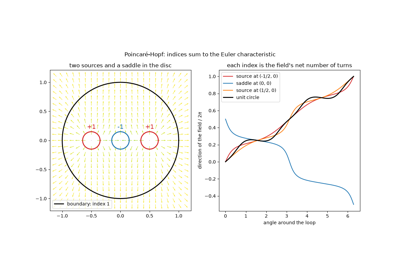
The Poincaré-Hopf index theorem (1885-1927)
1895-1900 – Poincaré’s Analysis Situs: Homology#
Poincaré’s 1895 memoir Analysis Situs and its five complements founded algebraic topology. After Poul Heegaard pointed out errors in the first version, Poincaré rebuilt the theory in 1899 on decompositions into cells and simplices, with incidence matrices recording which faces bound which. Betti numbers became ranks, and in 1900 torsion coefficients appeared, read from the Smith form of those matrices. The alternating count of simplices \(\sum (-1)^k f_k\) equals the alternating sum of Betti numbers. This is the Euler-Poincaré formula, which makes Euler’s \(V - E + F\) an invariant of every space, not only of polyhedra.
Implementation: mathematicskit.topology.systems.homology.homology()
returns a HomologyResult with Betti numbers and torsion
coefficients from the Smith form of each boundary matrix, and
SimplicialComplex.boundary_matrix gives the signed incidence
matrices. The tests check spheres, the torus, the Klein bottle, the
projective plane and the Möbius strip, and that both sides of the
Euler-Poincaré formula agree.
References: H. Poincaré, “Analysis situs,” Journal de l’École Polytechnique (2) 1 (1895), 1-121; H. Poincaré, “Second complément à l’Analysis Situs,” Proceedings of the London Mathematical Society 32 (1900), 277-308.
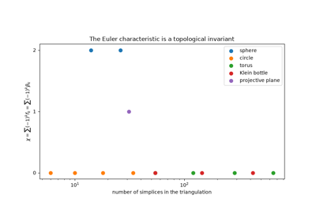
Poincaré’s Analysis Situs: homology and the Euler-Poincaré formula (1895-1900)
1895 – The Fundamental Group#
In the same memoir Poincaré introduced the fundamental group: loops from a base point, composed end to end, up to deformation. It can be non-abelian, and so it sees more than homology. Poincaré used it in 1904 to show that a 3-manifold with the homology of the sphere need not be a sphere, which led him to the question that became the Poincaré conjecture. For a simplicial complex the group has a finite presentation: contract a spanning tree, keep one generator per remaining edge, and impose one relation per triangle. Heinrich Tietze’s 1908 transformations simplify such presentations. Abelianizing the group gives back the first homology group.
Implementation: mathematicskit.topology.systems.fundamental_group.fundamental_group()
builds the edge-path presentation and applies Tietze moves.
abelianization()
computes the abelianization by the Smith form. The tests check the
torus, the projective plane \(\langle a \mid a^2\rangle\), the
sphere, and that the abelianization equals \(H_1\) for every
surface.
References: H. Poincaré, “Analysis situs,” Journal de l’École Polytechnique (2) 1 (1895), 1-121, Sec. 12; H. Tietze, “Über die topologischen Invarianten mehrdimensionaler Mannigfaltigkeiten,” Monatshefte für Mathematik und Physik 19 (1908), 1-118.
1907-1921 – The Classification of Surfaces#
Möbius in 1863 sorted closed orientable surfaces by their number of handles, and Walther von Dyck added the non-orientable ones in 1888. Max Dehn and Poul Heegaard gave the first combinatorial treatment in their 1907 encyclopedia article. Henry Roy Brahana completed the proof in 1921 by reducing any polygon with paired edges to a normal form. The result is that every compact connected surface is a sphere with handles or with cross-caps, minus some discs. It is determined by its orientability, its Euler characteristic and its number of boundary circles. Tibor Radó’s 1925 proof that every surface can be triangulated made the classification cover all surfaces, not only triangulated ones.
Implementation: mathematicskit.topology.systems.surfaces.classify_surface()
checks that a complex is a surface (every vertex link a circle or an
arc), computes the three invariants, and names the result. The tests
classify the sphere, disc, annulus, torus, Möbius strip, projective
plane, Klein bottle and punctured surfaces, and reject non-surfaces.
References: M. Dehn and P. Heegaard, “Analysis situs,” in Encyklopädie der mathematischen Wissenschaften III.1.1 (Leipzig: Teubner, 1907), 153-220; H. R. Brahana, “Systems of circuits on two-dimensional manifolds,” Annals of Mathematics 23(2) (1921), 144-168.
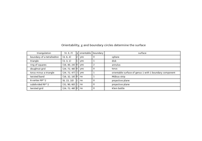
The classification of surfaces (Dehn and Heegaard 1907, Brahana 1921)
1911 – Brouwer’s Fixed-Point Theorem#
L. E. J. Brouwer proved in 1911 that every continuous map of a closed ball to itself leaves some point fixed (Piers Bohl had a version in 1904). Stir a cup of coffee, and some particle ends up where it began. The theorem became a basic tool of analysis and, through Nash’s 1950 proof that equilibria exist, of economics. Brouwer’s proof was not constructive, though he later championed constructive mathematics. Sperner’s lemma later gave an algorithm. Label each vertex of a fine triangulation by a coordinate the map does not increase, and any fully labelled small triangle is an approximate fixed point.
Implementation: mathematicskit.topology.systems.fixed_points.brouwer_fixed_point()
labels the vertices of triangle_grid()
that way, finds a fully labelled triangle and returns a
FixedPointResult. The tests compare the result with
scipy.optimize.fsolve() as the grid is refined.
References: L. E. J. Brouwer, “Über Abbildung von Mannigfaltigkeiten,” Mathematische Annalen 71 (1911), 97-115.
1911-1915 – Simplicial Approximation and the Invariance of Homology#
Betti numbers were defined from a triangulation. Were they properties of the space, or of the chosen triangulation? Brouwer’s 1911 paper supplied the tool to decide: any continuous map between complexes can be approximated by a simplicial map after subdividing the domain finely enough. With it James Waddell Alexander proved in 1915 that Betti numbers and torsion coefficients are topological invariants. Two triangulations of the same space give the same homology, so homology can be computed from any convenient one. Barycentric subdivision, which replaces each simplex by the chains of its faces, refines a complex without changing the space.
Implementation: mathematicskit.topology.systems.complexes.barycentric_subdivision()
places a vertex at each simplex’s barycentre and a simplex on each
chain of faces. The tests check that repeated subdivision preserves the
Euler characteristic and the Betti numbers, rational and mod 2.
References: L. E. J. Brouwer, “Über Abbildung von Mannigfaltigkeiten,” Mathematische Annalen 71 (1911), 97-115; J. W. Alexander, “A proof of the invariance of certain constants of analysis situs,” Transactions of the American Mathematical Society 16 (1915), 148-154.
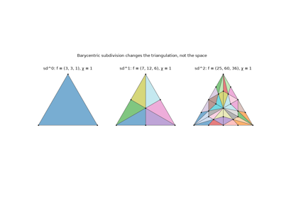
Brouwer, Alexander, and the invariance of homology under subdivision (1911-1915)
1923 – The Künneth Formula#
Hermann Künneth, in his 1923 dissertation under Heinrich Tietze, computed the Betti numbers of a product of two spaces: \(\beta_k(X \times Y) = \sum_{i+j=k}\beta_i(X)\beta_j(Y)\). In terms of Poincaré polynomials, the polynomial of a product is the product of the polynomials, so the torus has \((1 + t)^2 = 1 + 2t + t^2\). The full statement for integer homology, with a correction term for torsion, came later with the algebra of tensor and Tor products. To compute with products one needs to triangulate them. The staircase subdivision of a product of simplices, made systematic by Eilenberg and Zilber, does this.
Implementation: mathematicskit.topology.systems.complexes.simplicial_product()
triangulates \(|K| \times |L|\) with \(\binom{p+q}{p}\)
simplices per product of a \(p\)- and a \(q\)-simplex. The tests
check the counts and that the Betti numbers of products of circles and
spheres are convolutions.
References: H. Künneth, “Über die Bettischen Zahlen einer Produktmannigfaltigkeit,” Mathematische Annalen 90 (1923), 65-85; S. Eilenberg and J. A. Zilber, “Semi-simplicial complexes and singular homology,” Annals of Mathematics 51 (1950), 499-513.
1925-1967 – Morse Theory and Banchoff’s Critical Points#
Marston Morse related the critical points of a smooth function on a manifold to its topology. Each critical point has an index, the number of independent downhill directions. The number of critical points of index \(k\) is at least \(\beta_k\), and their alternating count is the Euler characteristic. On an upright torus the height has one minimum, two saddles and one maximum, and \(1 - 2 + 1 = 0\). Thomas Banchoff found the polyhedral version in 1967. Charge every simplex to its highest vertex, and a vertex’s index is the alternating count of the simplices it receives. The indices sum to \(\chi\) for any height function in general position.
Implementation: mathematicskit.topology.systems.surfaces.critical_points()
computes Banchoff’s indices and returns the minima, saddles and maxima
in a CriticalPointsResult. The tests check the upright torus and
that random heights on several surfaces always sum to \(\chi\).
References: M. Morse, “Relations between the critical points of a real function of n independent variables,” Transactions of the American Mathematical Society 27 (1925), 345-396; T. F. Banchoff, “Critical points and curvature for embedded polyhedra,” Journal of Differential Geometry 1 (1967), 245-256.
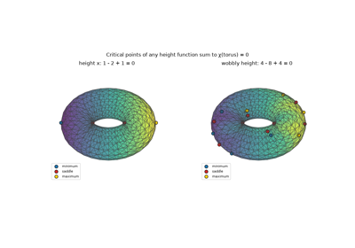
Morse theory and Banchoff’s critical points (1925-1967)
1926-1929 – Lefschetz’s Fixed-Point Theorem and Hopf’s Trace Formula#
Solomon Lefschetz attached to every continuous self-map \(f\) of a compact polyhedron the number \(L(f) = \sum_k (-1)^k \operatorname{tr}(f_*: H_k \to H_k)\), and proved in 1926 that \(L(f) \ne 0\) forces a fixed point. On a ball every map has \(L = 1\), which recovers Brouwer. For the identity, \(L = \chi\). Heinz Hopf showed in 1929 that the same alternating trace can be taken on the chain groups instead of homology. This Hopf trace formula turns the theorem into a count of simplices that the map sends to themselves. The converse fails: a map with \(L = 0\) may still have fixed points.
Implementation: mathematicskit.topology.systems.fixed_points.lefschetz_number()
takes a simplicial map given on vertices and evaluates the chain-level
trace. The tests check rotations (0) and reflections (2) of the circle,
the antipodal map of the octahedral sphere (0), and identities
(\(\chi\)).
References: S. Lefschetz, “Intersections and transformations of complexes and manifolds,” Transactions of the American Mathematical Society 28 (1926), 1-49; H. Hopf, “Über die algebraische Anzahl von Fixpunkten,” Mathematische Zeitschrift 29 (1929), 493-524.
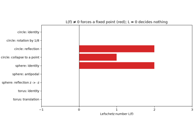
Lefschetz’s fixed-point theorem and Hopf’s trace formula (1926-1929)
1927 – Vietoris’s Complex#
To extend homology from polyhedra to arbitrary compact metric spaces, Leopold Vietoris built a complex at each scale \(\varepsilon\), with a simplex for every finite set of points of diameter less than \(\varepsilon\). He then took a limit as \(\varepsilon \to 0\). Eliyahu Rips rediscovered the construction in the 1980s for hyperbolic groups. As the Vietoris-Rips complex it became the standard way to turn a point cloud into a space, since it needs only pairwise distances, and it is the clique complex of the neighbourhood graph.
Implementation: mathematicskit.topology.systems.point_clouds.vietoris_rips_complex()
uses scipy.spatial.distance.pdist() for the distances and grows
cliques with clique_simplices().
The tests check a regular hexagon at the scales where it is a circle
and where it fills in.
References: L. Vietoris, “Über den höheren Zusammenhang kompakter Räume und eine Klasse von zusammenhangstreuen Abbildungen,” Mathematische Annalen 97 (1927), 454-472.
1928 – Sperner’s Lemma#
Emanuel Sperner, then a doctoral student in Hamburg, proved a counting lemma in 1928 while giving a new proof that dimension is a topological invariant. Triangulate a triangle and label the vertices 0, 1, 2, with the corners labelled differently and each side using only its corners’ labels. Then an odd number of small triangles carry all three labels. Knaster, Kuratowski and Mazurkiewicz derived Brouwer’s theorem from it a year later. Its door-to-door proof became, through the work of Scarf and Kuhn in the 1960s, an algorithm for computing fixed points and economic equilibria.
Implementation: mathematicskit.topology.systems.fixed_points.fully_labeled_triangles()
finds the fully labelled triangles of a labelling of
triangle_grid(), and
random_sperner_labeling()
draws random Sperner labellings. The tests check that the count is odd.
References: E. Sperner, “Neuer Beweis für die Invarianz der Dimensionszahl und des Gebietes,” Abhandlungen aus dem Mathematischen Seminar der Universität Hamburg 6 (1928), 265-272.
1929-1930 – The Mayer-Vietoris Sequence#
Walther Mayer in 1929, and Leopold Vietoris in a short note of 1930, related the homology of a union \(A \cup B\) to that of \(A\), \(B\) and \(A \cap B\). In modern form this is a long exact sequence, \(\cdots \to H_k(A\cap B) \to H_k(A)\oplus H_k(B) \to H_k(A\cup B) \to H_{k-1}(A\cap B) \to \cdots\), which lets homology be computed by cutting a space into simpler pieces. It was one of the first exact sequences, the language in which Eilenberg and Steenrod later axiomatized homology. Gluing two annuli along two circles gives a torus, and the connecting map \(H_2(T^2) \to H_1(A\cap B)\) explains the torus’s second loop.
Implementation: mathematicskit.topology.systems.homology.mayer_vietoris()
computes the rank of \(H_k(A\cap B) \to H_k(A)\oplus H_k(B)\) from
cycle bases (scipy.linalg.null_space()). It predicts the Betti
numbers of the union from exactness and checks them against a direct
computation. The tests cover the torus, a circle from two arcs and
disjoint pieces.
References: W. Mayer, “Über abstrakte Topologie,” Monatshefte für Mathematik und Physik 36 (1929), 1-42; L. Vietoris, “Über die Homologiegruppen der Vereinigung zweier Komplexe,” Monatshefte für Mathematik und Physik 37 (1930), 159-162.
1932-1948 – Čech Complexes and the Nerve Theorem#
Pavel Alexandroff defined in 1928 the nerve of a cover: a simplex for every collection of sets with a common point. Eduard Čech built a homology theory on nerves of open covers in 1932, valid for spaces far wilder than polyhedra. The nerve theorem, proved by Karol Borsuk in 1948 and in another form by Jean Leray, says that if every nonempty intersection is contractible, the nerve has the homotopy type of the union. For balls around data points the nerve is the Čech complex. It differs from the Vietoris-Rips complex, which is cheaper to build but fills in triangles whose balls meet only in pairs.
Implementation: mathematicskit.topology.systems.point_clouds.cech_complex()
keeps a simplex when the smallest circle enclosing its points, from
mathematicskit.geometry.min_enclosing_circle(), has radius at most
\(r\). planar_betti_numbers()
counts the components and holes of the union of discs with
scipy.ndimage.label(), independently. The tests check the nerve
theorem and the inclusions between Čech and Rips complexes.
References: P. Alexandroff, “Über den allgemeinen Dimensionsbegriff und seine Beziehungen zur elementaren geometrischen Anschauung,” Mathematische Annalen 98 (1928), 617-635; E. Čech, “Théorie générale de l’homologie dans un espace quelconque,” Fundamenta Mathematicae 19 (1932), 149-183; K. Borsuk, “On the imbedding of systems of compacta in simplicial complexes,” Fundamenta Mathematicae 35 (1948), 217-234.
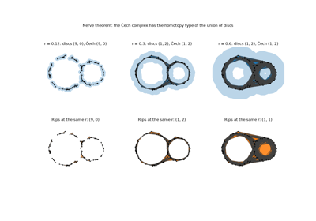
Čech complexes and the nerve theorem (1932-1948)
1935 – Hopf’s Umlaufsatz#
As one travels once around a closed plane curve, the tangent direction turns through a whole number of full turns. Heinz Hopf proved in 1935 that for a simple closed curve this turning number is exactly \(\pm 1\), the “rotation theorem” or Umlaufsatz. It is the plane-curve case of the Gauss-Bonnet theorem, and Hopf’s proof, which deforms the tangent map through secant directions, became a model argument. Hassler Whitney and William Graustein showed in 1937 that the turning number is the only invariant of closed curves up to regular deformation: two curves can be deformed into each other without kinks exactly when their turning numbers agree.
Implementation: mathematicskit.topology.systems.curves.turning_number()
sums the signed exterior angles of a closed polygon. The tests check
circles in both directions, a figure eight (0), a limaçon with an inner
loop (2) and the pentagram (2).
References: H. Hopf, “Über die Drehung der Tangenten und Sehnen ebener Kurven,” Compositio Mathematica 2 (1935), 50-62; H. Whitney, “On regular closed curves in the plane,” Compositio Mathematica 4 (1937), 276-284.
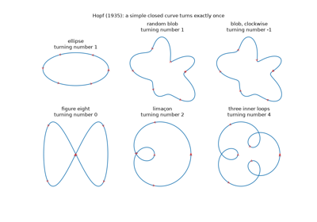
Hopf’s Umlaufsatz: the turning number of a closed curve (1935)
2000-2002 – Persistent Homology#
A point cloud has no single correct scale: a Vietoris-Rips complex built too fine is dust, and one built too coarse is a blob. Herbert Edelsbrunner, David Letscher and Afra Zomorodian proposed in 2000 to use every scale at once. As the scale grows, homology classes are born and later die, and a class that persists over a long range of scales is a feature rather than noise. Their algorithm reduces the boundary matrix of the whole filtration once and pairs every birth with its death. Zomorodian and Gunnar Carlsson recast the theory in 2005 as the homology of a module over a polynomial ring, with barcodes as its invariants. Related ideas go back to Patrizio Frosini’s size functions and Vanessa Robins’s work in the 1990s.
Implementation: mathematicskit.topology.systems.persistence.persistent_homology()
runs the standard column reduction over \(\mathbb{Z}/2\) on any
Filtration, such as
vietoris_rips_filtration()
or lower_star_filtration(),
and returns a PersistenceDiagram. The tests check that a noisy
circle has one long \(H_1\) bar, and that the diagram reproduces the
Betti numbers of the complex at every scale.
References: H. Edelsbrunner, D. Letscher and A. Zomorodian, “Topological persistence and simplification,” Discrete & Computational Geometry 28 (2002), 511-533; A. Zomorodian and G. Carlsson, “Computing persistent homology,” Discrete & Computational Geometry 33 (2005), 249-274.
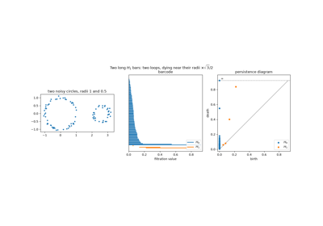
Persistent homology (Edelsbrunner, Letscher and Zomorodian 2002)
2007 – Stability of Persistence Diagrams#
A summary of noisy data is useful only if small noise changes it only a little. David Cohen-Steiner, Herbert Edelsbrunner and John Harer proved in 2007 that persistence diagrams are stable. If two functions differ by at most \(\varepsilon\), their sublevel-set diagrams are at bottleneck distance at most \(\varepsilon\), where the bottleneck distance is the cost of the best matching between the diagrams, with points allowed to be matched to the diagonal. Noise adds points, but only close to the diagonal. Chazal and coauthors extended the result in 2009 to Vietoris-Rips filtrations of point clouds that are close in the Gromov-Hausdorff distance. Stability is what justifies persistent homology as a statistic.
Implementation: mathematicskit.topology.systems.persistence.bottleneck_distance()
bisects over the candidate values, testing each for a perfect matching
with scipy.sparse.csgraph.maximum_bipartite_matching(). The tests
check \(d_B \le \|f - g\|_\infty\) for noisy signals and small cases
by hand.
References: D. Cohen-Steiner, H. Edelsbrunner and J. Harer, “Stability of persistence diagrams,” Discrete & Computational Geometry 37 (2007), 103-120.
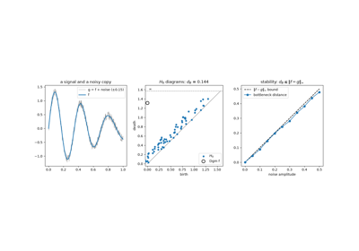
Stability of persistence diagrams (Cohen-Steiner, Edelsbrunner and Harer 2007)
2007 – Mapper#
Gurjeet Singh, Facundo Mémoli and Gunnar Carlsson introduced Mapper in 2007 as a way to see the shape of high-dimensional data. Choose a lens function, cover its range by overlapping intervals, cluster the points in each slice, and connect clusters that share points. The resulting graph is a discrete version of Georges Reeb’s 1946 graph of level sets. Loops and flares in it reveal structure that projections can hide. In 2011 Nicolau, Levine and Carlsson used it to find a subgroup of breast cancers with excellent survival.
Implementation: mathematicskit.topology.systems.point_clouds.mapper_graph()
clusters each slice by single linkage with
scipy.cluster.hierarchy.linkage() and returns a MapperResult
whose graph is a simplicial complex.
plot_mapper_graph()
draws it. The tests check that a noisy circle gives a graph with one
loop and that two blobs give two components.
References: G. Singh, F. Mémoli and G. Carlsson, “Topological methods for the analysis of high dimensional data sets and 3D object recognition,” in Eurographics Symposium on Point-Based Graphics (2007), 91-100; M. Nicolau, A. J. Levine and G. Carlsson, “Topology based data analysis identifies a subgroup of breast cancers with a unique mutational profile and excellent survival,” Proceedings of the National Academy of Sciences 108 (2011), 7265-7270.